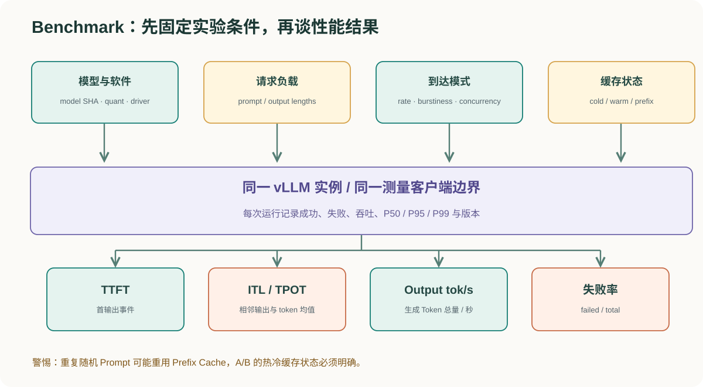

第 25 章 · 从原理到可复现实验
Benchmarking：让性能结论可以复现
基于正确的 TTFT/ITL/TPOT 定义与完整负载矩阵，设计可复算、可比较、可用于发布决策的 vLLM Benchmark。
“某配置快 30%”没有模型、请求分布、缓存状态和硬件环境就不能当作工程结论。本章把指标定义、实验设计、工具参数、统计汇总和 SLO 验收连接起来，用可复算的玩具实验代替编造的性能数字。
学习目标
- 定义请求吞吐、输出吞吐、TTFT、ITL 和 TPOT。
- 区分 request-rate 与并发上限。
- 避免 Prefix Cache 污染 A/B 比较。
- 写出含失败率与环境信息的发布验收报告。

25.1 先定义性能目标，再选择 benchmark
推理服务同时受不同目标约束：在线交互希望低 TTFT 和 ITL；批量生成追求高 output tokens/s；企业线上服务还关心 P95/P99、失败率、成本/token 和不同长度请求的公平性。
| 指标 | 测量定义（简化） | 常见误读 |
|---|---|---|
| TTFT | 客户端请求开始至首个输出事件 | 忽略了网关/网络与排队 |
| ITL | 相邻 Streaming 输出事件间隔 | 等于 TPOT（并不总是） |
| TPOT | (E2E−TTFT)/(输出 tokens−1)，请求级 | 直接当成每次 GPU kernel 耗时 |
| Request throughput | 完成的成功请求 / 观测时间 | 不区分输出长短 |
| Output throughput | 生成 tokens / 观测时间 | 与输入 token 一起计作生成速度 |
| Goodput | 满足事先定义的 SLO 的业务请求率 | 只看吞吐不设延迟/错误条件 |
这里的 TPOT 是第 17 章讨论的请求级定义；输出事件若一次包含多个 token，ITL 不等于每 token 时间。统计分位数必须说明在“每请求”还是“每输出 token”分布上计算。
25.2 工作负载五维矩阵
不要用单一的“1000 requests/s”表示全体模型性能。先确定要回答的问题：“在模型 M、GPU G、输入 P/输出 O 分布、请求率 R、缓存命中模式 C 下，P99 TTFT 能否低于业务阈值，成功率是否可接受？”
- 模型与软件：模型/Tokenizer revision、量化、chat template、vLLM SHA、driver / CUDA、内核后端。
- 负载：真实或合成请求分布，Prompt 长度、输出上限、warmup，是否包含多模态。
- 并发与到达：
--request-rate是请求到达率；--max-concurrency是客户端正在等待的请求上限，两者不是一个概念。 - 缓存：Prefix Cache 是冷启动还是热态？相同随机数据集的第二次运行会产生额外命中。
- 验收： P50/P95/P99 的 TTFT/ITL/E2E、错误率、GPU/KV usage、成本和质量指标。
比较 A/B 时，先做多次预热，再按 A-B-A 或交错顺序运行，记录时间戳、服务器健康、失败请求和原始数据。网络延迟明显时，把客户端侧与服务端侧的 measurement boundary 分开。
25.3 使用官方 CLI：serve / throughput / latency
当前 vLLM Benchmark CLI 支持面向不同目标的子命令；生产环境的真实请求回放和复杂负载模式，官方也推荐独立的 GuideLLM。以下展示有限到达率场景，参数名需与实际安装版本校验。
# 终端 A：本地测试服务，模型与硬件自行确认
vllm serve <tested-chat-model>
# 终端 B：随机合成数据；固定长度只是受控实验，并非生产流量
vllm bench serve \
--backend vllm \
--model <tested-chat-model> \
--endpoint /v1/completions \
--dataset-name random \
--random-input-len 512 \
--random-output-len 128 \
--num-prompts 100 \
--request-rate 4 \
--max-concurrency 8对 Chat Template 敏感的模型应匹配实际 API endpoint 和数据格式；仅把 /v1/completions 换成 Chat endpoint 而不调整 backend / payload，可能产生无效结果。使用 vllm bench throughput 时也要明确它测的是离线吞吐，而不等于在线请求延迟。
重要陷阱：官方明确提醒：重复使用同一份可复现 Prompt，会让第二轮 Prefix Cache 命中膨胀，造成吞吐改善假象。对“禁用缓存”组、冷缓存组、热缓存组分别报告，必要时改变 seed 或隔离 Server 缓存。
25.4 从请求记录复算指标
request throughput = N_success / T_walloutput throughput = Σ output_tokens / T_wall例：在纯教学假设中，40 个请求于 20 秒内完成，30 个成功，其生成 token 合计 2400，则 request throughput=1.5 req/s、output throughput=120 tok/s。未达成请求不应静默删除：必须同时报告 10/40=25% 的失败比例。这不是 vLLM 的真实 Benchmark 结果。
平均值可能掩盖长尾。P99 是特定请求分布中接近最慢的部分请求对应的统计位置，不能通过将平均 TTFT 乘以常数得到。样本量小、失败请求多时 P99 不稳定。
25.5 离线 Benchmark 算例：并发与成功率
输入成功请求数、失败数、时间窗口与输出 tokens，即可复算定义公式；不推测 GPU 性能或实际优化收益。
此实验仅复算输入数字，不是性能预测器。
25.6 合格报告与回归判定
每份 Benchmark 报告至少应包含：测试时间与 commit；模型 / Tokenizer / GPU / precision；输入输出 Token 分布、RPS / concurrency、冷/热缓存；重复次数；每次成功/失败请求数；P50/P95/P99 TTFT/ITL/E2E 和最终吞吐。记录 raw logs（脱敏）、参数与图表脚本，供复算。
优化策略不应只以“最大吞吐”优先：要建立 负载–SLO–成本的 Pareto 前沿。例如更高 batch 可能提高 output tok/s，但同时推高 TTFT；Prefix Cache 可以明显改善重复 Prefix 的短请求，却未必帮助没有相似前缀的流量。
训练本章实验时，首先在单实例、小规模、可靠网络上确认服务启动、API payload 与指标一致，再推进到多机压测，最后才是生产容量规划；别对没有做过真实请求测试的配置宣布“性能提高 2 倍”。
学习自测
- 为什么相同输出吞吐不代表相同 P99 TTFT？
- 如何避免 Prefix Cache 命中扭曲 A/B 结论？
- request-rate 和 max-concurrency 的含义有何区别？
- 什么条件下能称一次 Benchmark 是可复现、可用于部署决策的？
权威资料与证据入口
- vLLM Benchmark CLI：在线 / 离线子命令、缓存污染提醒和负载控制参数
- vLLM Production Metrics：服务端指标及 Histogram 指标族
- GuideLLM：官方推荐的生产压测/负载工具之一
- vLLM benchmarking source：上游基准实现的版本入口
本文按 vLLM 上游提交 e72fc9ae50c221180c4b8f4a94c5009714a4b199 核对，文档审校日期 2026-11-22。命令用于诊断或实验，不替代现网变更审查。